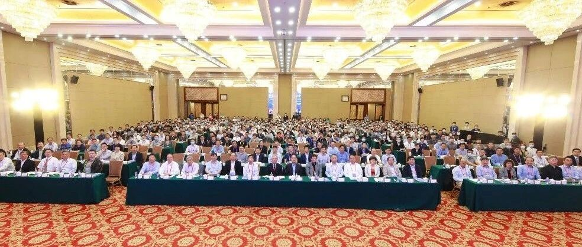

第二届土木工程计算与仿真技术学术会议成功举行
会议概况
“第二届土木工程计算与仿真技术会议”于2021年5月14-16日在北京会议中心成功举行。此次会议由中国建筑学会建筑结构分会指导，清华大学、中国建研院建研科技股份有限公司联合主办，清华大学土木水利学院、中国建研院建研科技股份有限公司和亚太建设科技信息研究院有限公司共同承办，香港理工大学、华中科技大学、大连理工大学、浙江大学、《建筑结构》杂志社协办。

大会开幕式合影
来自全国各地600余名学界、业界专家学者参加了此次会议，共话我国土木工程计算与仿真事业的发展与未来。

参会中国科学院、工程院院士
开幕式致辞
本届会议主办单位清华大学校务委员会副主任袁驷教授、会议指导单位中国建筑学会建筑结构分会理事长王翠坤研究员、会议学术委员会共同主任陈云敏院士和滕锦光院士在开幕式上致辞。

清华大学校务委员会副主任、清华大学土木水利学院袁驷教授致辞

中国建筑学会建筑结构分会理事长、中国建筑科学研究院副总工王翠坤研究员致辞

中国科学院院士、浙江大学陈云敏教授致辞

中国科学院院士、香港理工大学滕锦光教授视频致辞
精彩报告
此次会议共设立了“土木工程材料（混凝土、钢、复合材料、木材、土、岩石等）的本构模型”、“各类土木工程结构的破坏及倒塌模拟”、“基础设施的全生命周期（从施工到拆除）仿真”、“基础设施多尺度、多物理场模拟和长期性能预测”、“基础设施、城市及城市群模拟”、“计算风工程”、“优化方法在土木工程中的应用”、“分子动力学在土木工程中的应用”、“计算力学新方法在土木工程中的应用”、“土木工程计算与仿真方法的实验验证”、“基础设施健康监测中的计算方法”、“BIM及其他信息模型在土木工程中的应用”、“大数据以及图像处理技术在土木工程中的应用”、“虚拟现实和可视化技术在土木工程中的应用”、“人工智能技术在土木工程中的应用”、“土木工程机器人应用中的计算与仿真技术”、“面向土木工程计算与仿真技术的硬件开发与优化”等17个主题。
本次会议历时两天，6位院士、23位知名专家针对土木工程计算与仿真技术作了精彩的大会主题报告和特邀报告。
大会主题报告

程耿东院士大会主题报告

欧进萍院士大会主题报告

翟婉明院士大会主题报告

高德利院士大会主题报告

陈军院士大会主题报告

袁驷教授大会主题报告

香港理工大学/阿里巴巴达摩院张磊教授大会主题报告

广东博智林机器人有限公司于彦凯副院长大会主题报告

滕锦光院士大会主题报告
岩土会场特邀报告

结构会场特邀报告

会议现场、交流

分会场报告
本次会议共有10个分会场、178个分会场报告，全国高校、科研院所、企业代表踊跃展示土木工程计算与仿真技术领域的最新研究成果，分享这一领域的前沿理论与创新技术。

会议闭幕式及总结
会议闭幕式
本次会议闭幕式由陈云敏院士主持。会议秘书长、清华大学陆新征教授从会议总体统计数据、会议各主题论文数、会议摘要关键词分布三方面简要总结了本次会议成果。随后广西大学副校长韩林海教授代表下一届会议主办方广西大学与南方科技大学向大家发出诚挚邀请。最后陈云敏院士宣布本次会议圆满结束。

会议总结


广西大学副校长韩林海教授代表下一届会议主办方广西大学与南方科技大学发出邀请
致谢及下届会议预告
本次会议感谢北京迈达斯技术有限公司、德儒巴软件（上海）有限公司、广州建研数力建筑科技有限公司、北京并行科技股份有限公司、广联达科技股份有限公司的赞助支持。
会议简介：“土木工程计算与仿真技术学术会议”是由香港理工大学的滕锦光院士与浙江大学陈云敏院士共同发起的学术会议，旨为各界搭建交流与合作的平台，推动土木工程计算与仿真技术的发展。首届土木工程计算与仿真技术学术会议于2019年5月在武汉召开。下一届会议将于2023年在广西大学举办。